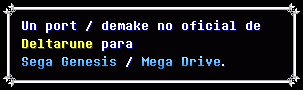

Prototipo inicial: fondo azul, texto de prueba y movimiento básico de Kris.
Can You Really Call This...
Soshu

Esto es lo que llevamos hasta ahora:
Diseñado para exprimir al máximo las capacidades de los 16 bits:
Las etapas clave planificadas para completar el desarrollo:
Dentro de lo posible, sí. De todas formas, teniendo en cuenta la inmensa cantidad de canciones de la banda sonora original de Toby Fox, es muy probable que terminemos apuntando a Sega CD. Básicamente es la misma arquitectura pero con una capacidad de almacenamiento gigante, lo que incluso nos permitiría meter todos los capítulos en un único CD sin tener que recurrir a cartuchos con tecnología Lock-On para transferir guardados.
Para mayor comodidad recomendamos usar RetroArch con el núcleo Genesis Plus GX, siendo una opción super práctica y sólida. Si buscas máxima precisión con el hardware real, BlastEm es una excelente alternativa.
¡Sí! Una vez completado el Capítulo 1, se liberará públicamente la ROM, todo el código fuente y los assets. El objetivo es que cualquier desarrollador o fan pueda usar este demake como base de aprendizaje, crear sus propios mods, o extraer mecánicas independientes para sus propios proyectos de Sega Genesis (como el sistema de party/seguimiento de Kris, el cuadro de diálogos, HUD, etc.).
Buscamos personas motivadas con ganas de ayudar a hacer este demake realidad:
Registro de los cambios y avances del proyecto:
Prototipo inicial: fondo azul, texto de prueba y movimiento básico de Kris.
Movimiento en ocho direcciones, cámara, fondo y animaciones de Kris implementados.
Sistema de cadena del grupo y aceleración progresiva al correr implementados.
Sprites de Susie y Ralsei añadidos.
Sistemas de diálogo y menú implementados, con selección visual y animaciones. Pendiente: personajes, HUD de dinero, etiquetas y acciones de los botones.
Efectos de sonido y personajes completados.
Reproducción simultánea de música y SFX; NPC de prueba, hitbox y sprite de diálogo implementados.